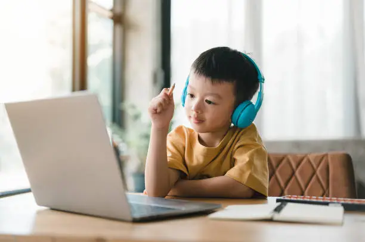

Los pediatras cada vez están más preocupados por el impacto del uso de las tecnologías en el bienestar de los niños. Por eso, la Asociación Española de Pediatría (AEP) ha elaborado el Plan Digital Familiar , una guía de recomendaciones para ayudar a los padres a educar a sus hijos en el uso de las tecnologías. Dormir, comer y jugar lejos de las pantallas son algunos de los consejos de la asociación para padres y tutores, ya que su uso reduce el diálogo familiar y altera el sueño de los niños. El plan elaborado junto a la Agencia Española de Protección de Datos (AEPD), se adapta a las necesidades de las familias y de los menores según su edad.
“El mundo digital, las tabletas, la televisión, los smartphones, tienen un impacto sobre la salud no solo del niño y del adolescente, también a lo largo de toda la vida”, ha advertido María Salmerón Ruiz, coordinadora del grupo de trabajo de Salud Digital del Comité de Promoción de la Salud de la AEP. “Pero esta población es especialmente vulnerable y sensible e impacta en todas las esferas, a nivel físico, a nivel social, a nivel psicológico, a nivel sexual”, ha añadido la doctora Salmerón en la presentación de esta guía en una rueda de prensa este jueves.
Los pediatras recomiendan controlar el tiempo de uso de las tecnologías y el lugar donde se usan. El plan, que las familias podrán personalizar y adaptar a sus circunstancias particulares, aconseja que los menores de dos años eviten por completo el uso de las pantallas; de 3 a 5 años las utilicen menos de una hora diaria; y a partir de 5 años, menos de dos horas al día. “Dar un móvil a un niño de 9 años sin límite de horario es como entrar en un Ferrari sin carnet de conducir y a 200 kilómetros por hora”, apunta la directora de la AEPD, Mar España Martí. Además, Salmerón ha explicado que el lugar indicado para utilizarlas son las zonas comunes a las familias: “Existe un mayor riesgo si el uso se hace en lugares como el baño o el dormitorio”.
Las pautas del Plan Digital Familiar también van dirigidas a los padres, para que puedan educar a través del ejemplo y ayudar a sus hijos a hacer un buen el uso de los dispositivos. Marcar límites de tiempo, establecer zonas libres de pantallas, no utilizar los dispositivos como “niñera” y revisar su contenido periódicamente, son algunas recomendaciones. ”Los niños se quedan más con lo que hacemos los padres que con lo que decimos”, ha resumido Guillermo Martín Carballo, vicepresidente de Atención Primaria de la AEP.
Entre los principales riesgos que tiene el uso excesivo de las pantallas, las expertas han destacado las afecciones en el neurodesarrollo, sobre todo antes de los dos años, y los problemas de ciberacoso. En España, 7 de cada 10 niños sufren a diario algún tipo de acoso o ciberacoso, según la Organización Mundial de la Salud (OMS). Entre enero de 2021 y febrero de 2022 se detectaron 11.229 casos graves de bullying, dato que sitúa a España como uno de los países europeos con más incidencia de acoso escolar. Salmerón explica que los problemas que causan son “dificultades de atención, problemas de sueño, de alimentación y disminución de la actividad física”.